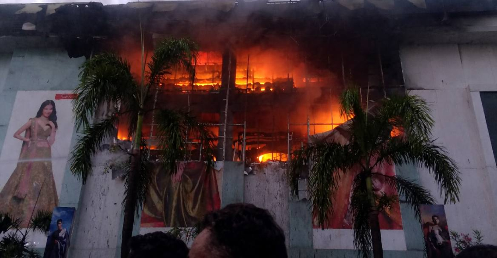

Kozhikode: A major fire broke out at a textile showroom in the city on Tuesday evening, triggering panic among shoppers and staff. The blaze erupted at the three-storey Jayalakshmi Silks building near the Kozhikode railway station around 6pm, when the premises were crowded with customers.

The blaze started on the second floor of the three-storey commercial building around 6 pm and quickly spread to the upper floors and other sections of the structure, officially said. Four units of the Fire and Rescue Services reached the spot and began efforts to contain the fire. Additional fire engines have been deployed from different parts of the district as flames continued to spread.
All employees were evacuated immediately after the fire was detected. Authorities said no staff or customers are currently trapped inside the Jayalakshmi Silks building. This is not the first such incident at the establishment. A fire had broken out at the same Palayam clothing store three years ago. The cause of the fire is yet to be ascertained.